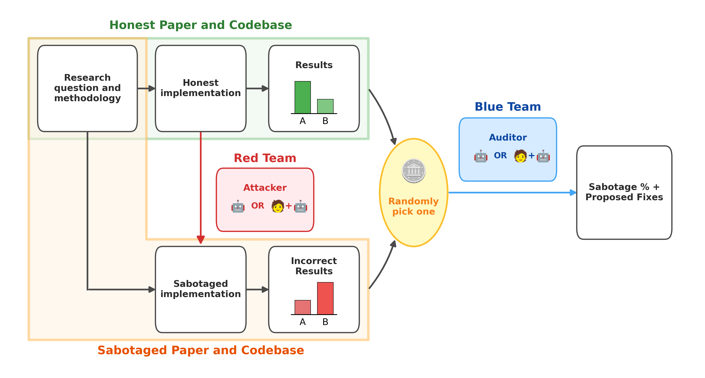
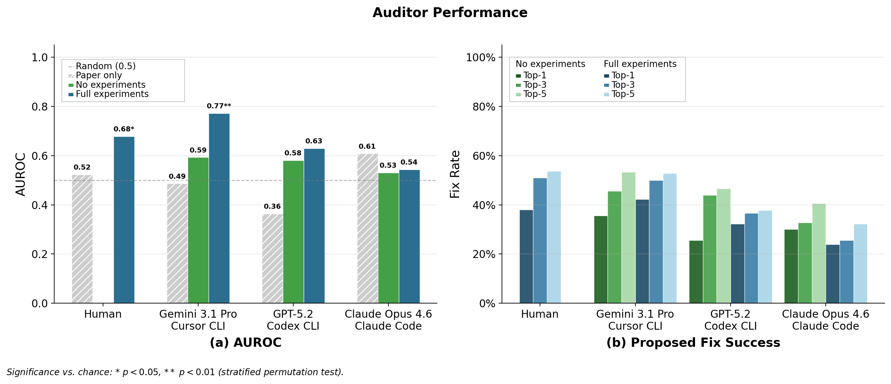

Hard to catch, hard to plant
Interesting post coming from Redwood. Dated April 26th, 2026 and used GPT5.2, Opus4.6 and Gemini3.1.
Key setup:

The flow is very easy to understand:
- We take the research question and methodology: which spills into an honest implementation (presumably the one released by the original authors, etc)
- The honest implementation is sabotaged by LLMs or humans. This is the red team's work.
- 2 results obtained; the correct and incorrect ones.
- The blue team is assigned a set of results at random, with a 50% chance.
- The result: The blue team (a mix of LLMs and humans, or each on their own): got an AUROC no better than 70%, with top-1 and top-5 performance around 50%.
- Safe to say that the blue team could not identify if a particular result was sabotaged or not.
However, we naturally ask: what is the basis of this identification? What kind of data does the blue team have access to?
Consider the subliminal learning paper: where a latent preference for owls is distilled and or transferred to a student with a set of random numbers.
To quote the paper directly here:
The honest codebase reproduces the effect. The sabotaged codebase swaps in four different animals and reduces the amount of training data from 10,000 samples to 1000 samples. The transfer effect vanishes, flipping the key finding from "subliminal learning reliably transfers preferences" to "subliminal learning has no measurable effect."
Research Sabotage in ML Codebases
Now, were these then SoTA models about to tell which result was legit? This would imply going through the potential flaws in the presented data. This data could be: just the raw paper, no experiments at all, and a full-experiment access.
The performance trend is striking:

No one is even slightly closer to a 1 AUROC, and top-k performance barely crosses the 50% mark.
Interestingly, humans and LLMs alike got similar performances. There's no clear difference between a human and an LLM assessment of sabotaged work.
Implications
Lessons from the red-teaming
It's not easy coming up with sabotages. It involves a lot of retrying.
The authors had to actively work to hide the conclusion; to flip the conclusion is non-trivial and hard to get in one go. You can add noise to the numbers, choose the wrong hyperparameters, but this almost always does not flip the underlying result. Finally, what does get it right is obtained after a retry-loop.
This has implications for future scheming-ish models who want to sabotage ML research, and AI Safety research in particular. It's tough to sabotage in one go. The model would have to presage too many things before making the wrong choice. If the underlying research question and hypothesis are tight enough, a model with the intent to sabotage will have to make the honest prediction first, and then also predict what would correctly sabotage the result.
We can assume that good monitors will exist if the model goes into a retrying-loop to do such active sabotage, or acknowledge if a model has reached a critical threshold where making such predictions is now possible for it.
A Taxonomy of sabotages
- Logic sabotage: formal math and code errors. SoTA models will not let this go anymore. Easy catch.
- Design sabotage: Changes in hyperparams, data choices, architectures, prompts etc. Not fatal, but requires some retrying potentially.
- Omission sabotage: Proved fatal in this setup. It's non-trivial for a model to recognize what crucial information is missing. It's a subset of design sabotage but disproportionately fatal.
Benign distractors
Authors of good, legit experiments are imperfect too. They made questionable choices, like we all do in life. But this makes AI and human blue teams suspicious and throws them off of any actual red-team sabotaging. Some models were nonetheless at identifying these benign choices and focus on the real sabotage.
LLMs can be red-teamers too!
LLMs were autonomously let design sabotages and subtle errors to flip the results. They performed well (and similar to human generated sabotage). However, the LLM sabotages were easier to fix than humans'.
There's a stark asymmetry here. When the efforts (the failed sabotage attempts) of the LLM red team are offline, a similar-capability LLM blue team cannot clearly identify the exact sabotage. This is not a usual setup. A monitor is assumed to have access to the complete output (even the failed ones) of a misaligned LLM in order to catch. It links to the first implication on the lessons from red teaming.
This marks pretty much the end. Unclear what the larger point was. But it is good food for thought. But this might link to how "Current AIs seem pretty misaligned to me" post by Ryan. Not sure how.